旅先でClaudeのスマホアプリからportfolioを編集してみた
就活出遅れ組がスキマ時間でportfolio制作を進めるための、ちょっとした試み。
初めまして、yukiです！
就活出遅れ組としてすぐにでもportfolioを完成させたいところですが、絶対に外せない予定が...
なら旅行先で作業すればいいじゃない！
ということで家のpcはdesktop、学校のノートpcはちょうど持ち出しNG！pcつけっぱで遠隔操作してまではなぁ〜
そこでclaudeのスマホアプリでgithubにアップロードしたものを編集してやろう！というのが今回の試み。
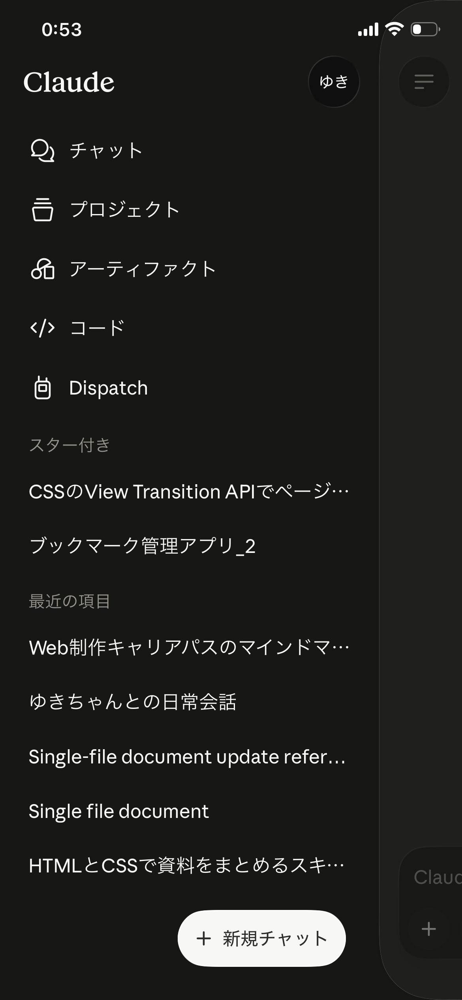
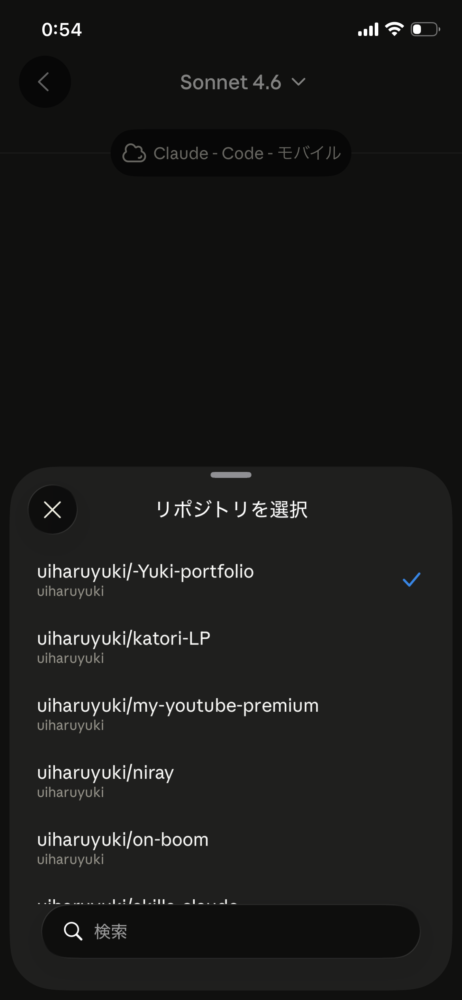
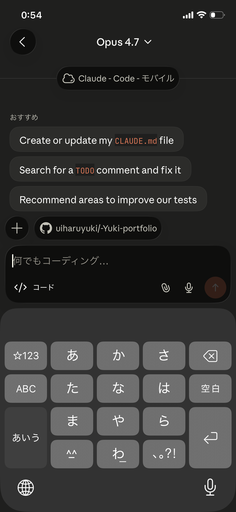
コードを選択→リポジトリを選択→これだけで作業可能！
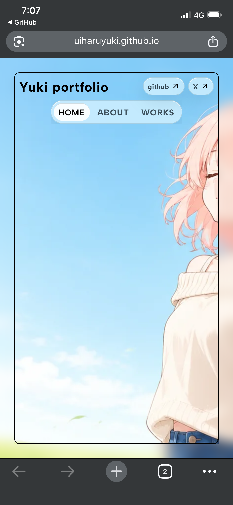
画像にキャラクターを使用していますが、差し替え前の仮画像（オリジナルキャラクター）なので気にせず笑。
私の携帯端末（iphone12）で見た際、外枠の黒線が内側寄りで中身が快適に閲覧できない状態になっていました。ヘッダーもpc用のものがそのまま反映、携帯端末での表示の確認をしていません。
まずは外枠のフレームの修正とヘッダーの修正案を同時に指示します。
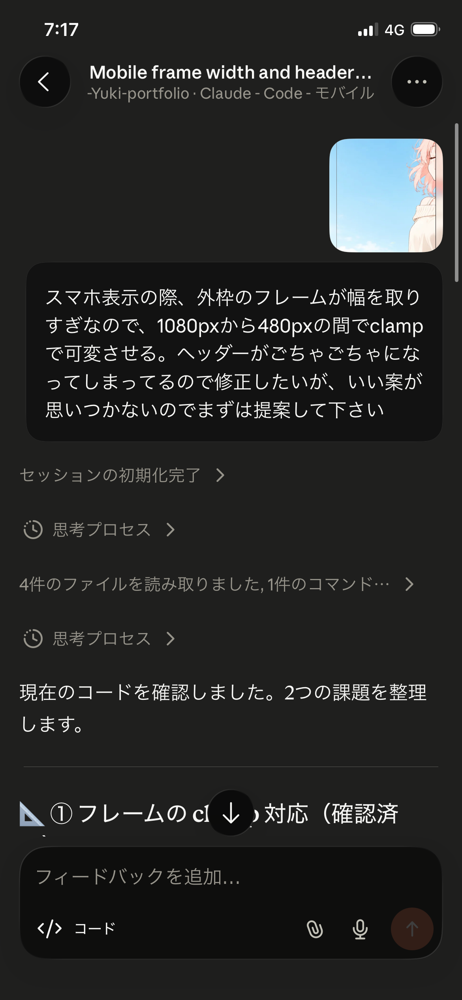
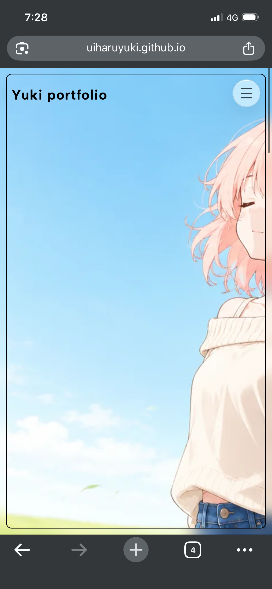
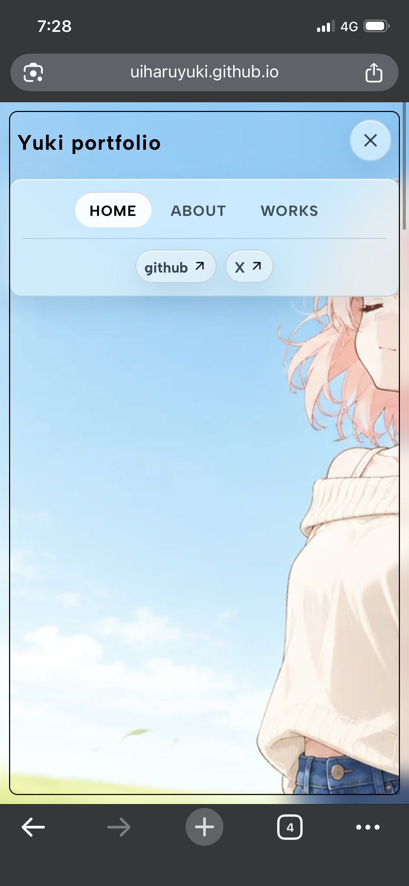
外枠とバーガーメニューはいい感じに作成してくれましたが、バーガーメニューの中身の表示の仕方が気になります...
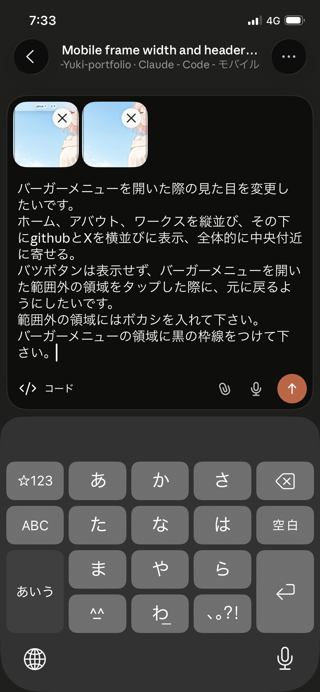
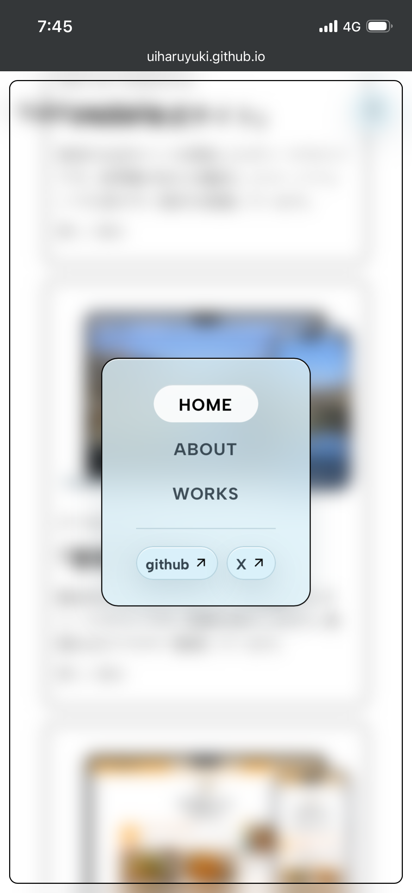
頭で描いていたものに近くなりました！
まだ気になる点があるので微修正。
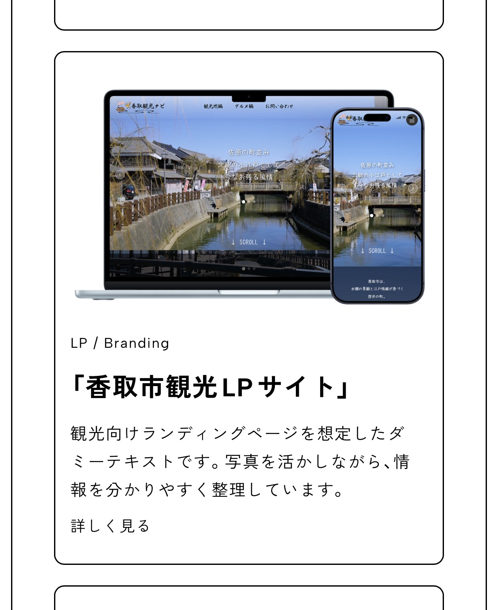
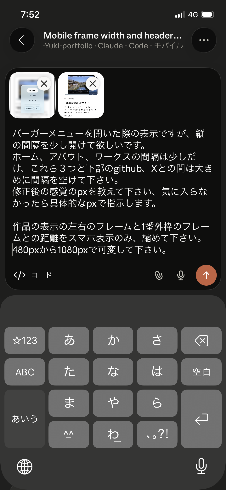
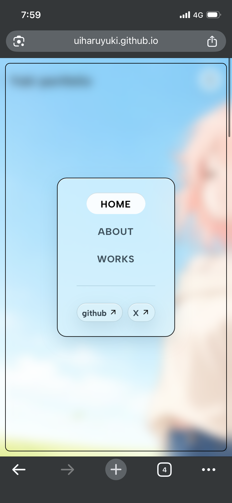
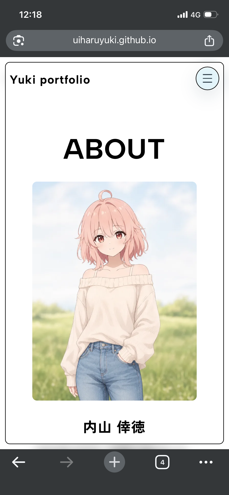
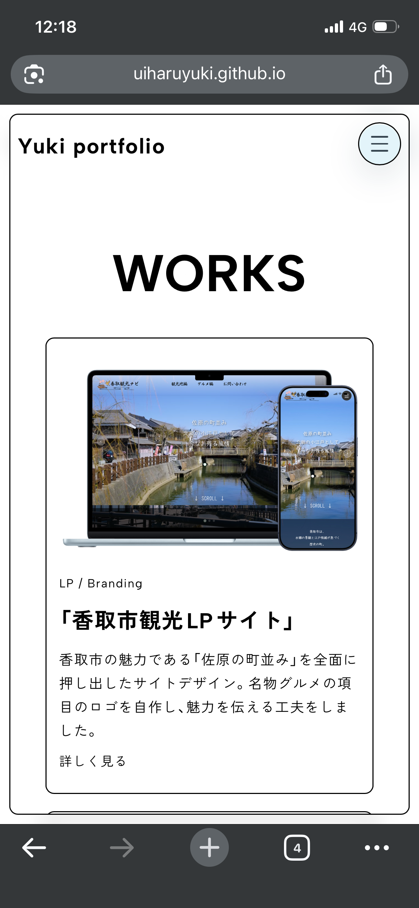
ヘッダーとタイトルの余白が気になるので修正。
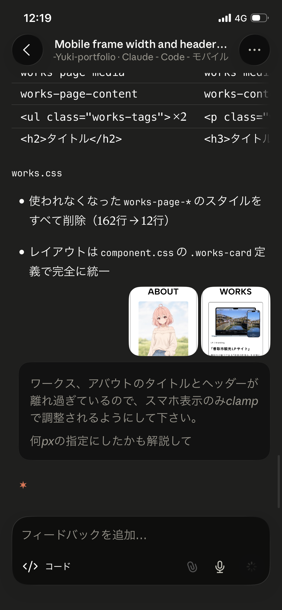
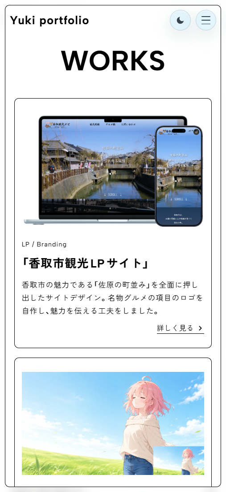
ここで終了！（疲れてこのあと作業してなかった）
せっかくの旅行なので作業もスキマ時間で程々にということで〜
ご清聴ありがとうございました♪